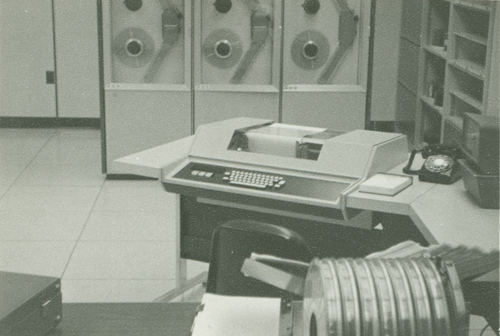
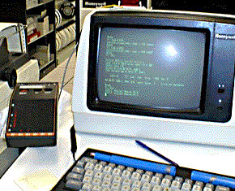
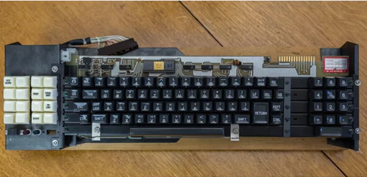

“Hello [New] World”
The Evolution into the Computer Keyboard
1946 - The Birth of a New Era
EINAC Computer was the very first computer and it is still the biggest technological advancement next to the internet. It was made in 1946 and used telegraph technology to work with punchcards that would input data into the computer and it would then output data. In 1948, the BINAC Computer was made and thet used magnets instead of punching holes into paper. This led to the invention of magnetic typewriters.
1948 - Slow and Steady Wins the Race
 Following the EINAC, the BINAC was made to further improve the technology. Instead of using a punchcard technology, it used electromagnetically controlled teletype technology. This means that it would the keys that were pressed on the keyboard would send to the computer as data, and the computer would output this data back to the user using a printer and paper. The BINAC computer paved the way for the first computer using a video terminal.
Following the EINAC, the BINAC was made to further improve the technology. Instead of using a punchcard technology, it used electromagnetically controlled teletype technology. This means that it would the keys that were pressed on the keyboard would send to the computer as data, and the computer would output this data back to the user using a printer and paper. The BINAC computer paved the way for the first computer using a video terminal.
1952 - "Let There Be Light"
Bell Labs and M.I.T. eventually created the MULTICS, a computer with a video display terminal. The VDT allowed the user to see the data that they were entering into the computer and see the data output in front of them rather than waiting for a keyboard to print out the data. This made the computer a lot more viable because of it's ease of use and efficency. Having VDT's added to computers was one of the last major features added to the computer. Following this, there were small changes made to every part of the computer. Most notably, the keyboard has not changed in layout, but rather the type of materials making the keyboard and how it is used.
1976 - When the People got More the Power
The Apple I was the first personal computer and was released in 1976 with a Alps SCB1A163 keyboard. Other than scientists and students using computers and their keyboards, average consumers were able to buy a computer here and have this brand new technology, albeit at $666.66 in 1976 ($3001.06 after inflation). The Apple I and it's keyboard opened the doors of technology to regular people because we are the future. Steve Jobs and Steve Wozniak wanted to make a computer that was pretty to look at, easy to use, and able to improve the life of anyone who owned one. They reached and exceeded their goals.